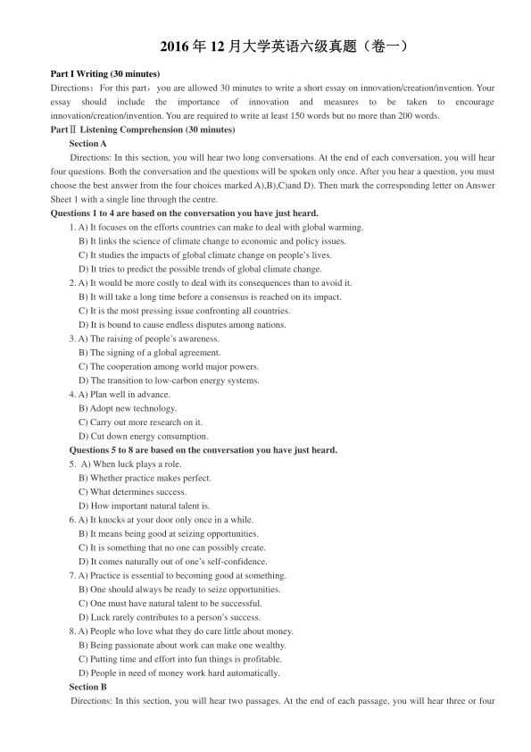
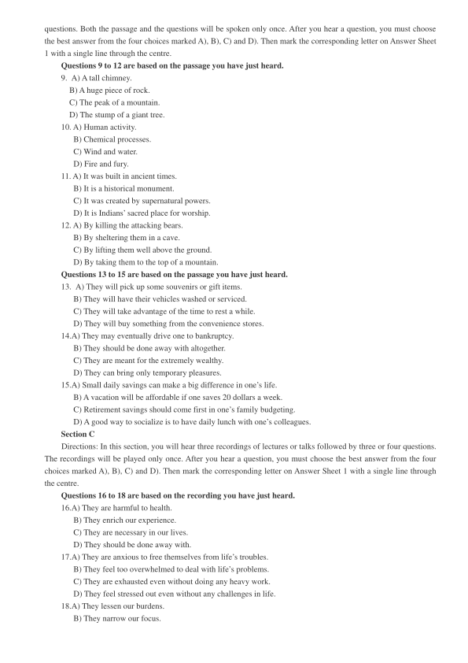
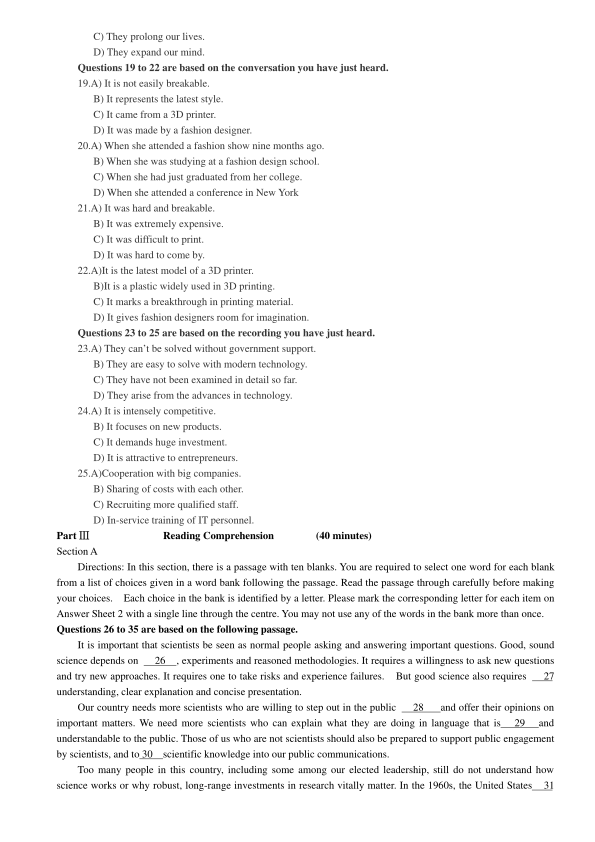

第 1 / 8 页

2016 年12 月大学英语六级真题（卷一）
Part I Writing (30 minutes)
Directions：For this part，you are allowed 30 minutes to write a short essay on innovation/creation/invention. Your
essay
should
include
the
importance
of
innovation
and
measures
to
be
taken
to
encourage
innovation/creation/invention. You are required to write at least 150 words but no more than 200 words.
PartⅡListening Comprehension (30 minutes)
Section A
Directions: In this section, you will hear two long conversations. At the end of each conversation, you will hear
four questions. Both the conversation and the questions will be spoken only once. After you hear a question, you must
choose the best answer from the four choices marked A),B),C)and D). Then mark the corresponding letter on Answer
Sheet 1 with a single line through the centre.
Questions 1 to 4 are based on the conversation you have just heard.
1. A) It focuses on the efforts countries can make to deal with global warming.
B) It links the science of climate change to economic and policy issues.
C) It studies the impacts of global climate change on people’s lives.
D) It tries to predict the possible trends of global climate change.
2. A) It would be more costly to deal with its consequences than to avoid it.
B) It will take a long time before a consensus is reached on its impact.
C) It is the most pressing issue confronting all countries.
D) It is bound to cause endless disputes among nations.
3. A) The raising of people’s awareness.
B) The signing of a global agreement.
C) The cooperation among world major powers.
D) The transition to low-carbon energy systems.
4. A) Plan well in advance.
B) Adopt new technology.
C) Carry out more research on it.
D) Cut down energy consumption.
Questions 5 to 8 are based on the conversation you have just heard.
5. A) When luck plays a role.
B) Whether practice makes perfect.
C) What determines success.
D) How important natural talent is.
6. A) It knocks at your door only once in a while.
B) It means being good at seizing opportunities.
C) It is something that no one can possibly create.
D) It comes naturally out of one’s self-confidence.
7. A) Practice is essential to becoming good at something.
B) One should always be ready to seize opportunities.
C) One must have natural talent to be successful.
D) Luck rarely contributes to a person’s success.
8. A) People who love what they do care little about money.
B) Being passionate about work can make one wealthy.
C) Putting time and effort into fun things is profitable.
D) People in need of money work hard automatically.
Section B
Directions: In this section, you will hear two passages. At the end of each passage, you will hear three or four
查看 / 复制本页文字
2016 年12 月大学英语六级真题（卷一） Part I Writing (30 minutes) Directions：For this part，you are allowed 30 minutes to write a short essay on innovation/creation/invention. Your essay should include the importance of innovation and measures to be taken to encourage innovation/creation/invention. You are required to write at least 150 words but no more than 200 words. PartⅡListening Comprehension (30 minutes) Section A Directions: In this section, you will hear two long conversations. At the end of each conversation, you will hear four questions. Both the conversation and the questions will be spoken only once. After you hear a question, you must choose the best answer from the four choices marked A),B),C)and D). Then mark the corresponding letter on Answer Sheet 1 with a single line through the centre. Questions 1 to 4 are based on the conversation you have just heard. 1. A) It focuses on the efforts countries can make to deal with global warming. B) It links the science of climate change to economic and policy issues. C) It studies the impacts of global climate change on people’s lives. D) It tries to predict the possible trends of global climate change. 2. A) It would be more costly to deal with its consequences than to avoid it. B) It will take a long time before a consensus is reached on its impact. C) It is the most pressing issue confronting all countries. D) It is bound to cause endless disputes among nations. 3. A) The raising of people’s awareness. B) The signing of a global agreement. C) The cooperation among world major powers. D) The transition to low-carbon energy systems. 4. A) Plan well in advance. B) Adopt new technology. C) Carry out more research on it. D) Cut down energy consumption. Questions 5 to 8 are based on the conversation you have just heard. 5. A) When luck plays a role. B) Whether practice makes perfect. C) What determines success. D) How important natural talent is. 6. A) It knocks at your door only once in a while. B) It means being good at seizing opportunities. C) It is something that no one can possibly create. D) It comes naturally out of one’s self-confidence. 7. A) Practice is essential to becoming good at something. B) One should always be ready to seize opportunities. C) One must have natural talent to be successful. D) Luck rarely contributes to a person’s success. 8. A) People who love what they do care little about money. B) Being passionate about work can make one wealthy. C) Putting time and effort into fun things is profitable. D) People in need of money work hard automatically. Section B Directions: In this section, you will hear two passages. At the end of each passage, you will hear three or four
第 2 / 8 页

questions. Both the passage and the questions will be spoken only once. After you hear a question, you must choose
the best answer from the four choices marked A), B), C) and D). Then mark the corresponding letter on Answer Sheet
1 with a single line through the centre.
Questions 9 to 12 are based on the passage you have just heard.
9. A) A tall chimney.
B) A huge piece of rock.
C) The peak of a mountain.
D) The stump of a giant tree.
10. A) Human activity.
B) Chemical processes.
C) Wind and water.
D) Fire and fury.
11. A) It was built in ancient times.
B) It is a historical monument.
C) It was created by supernatural powers.
D) It is Indians’ sacred place for worship.
12. A) By killing the attacking bears.
B) By sheltering them in a cave.
C) By lifting them well above the ground.
D) By taking them to the top of a mountain.
Questions 13 to 15 are based on the passage you have just heard.
13. A) They will pick up some souvenirs or gift items.
B) They will have their vehicles washed or serviced.
C) They will take advantage of the time to rest a while.
D) They will buy something from the convenience stores.
14.A) They may eventually drive one to bankruptcy.
B) They should be done away with altogether.
C) They are meant for the extremely wealthy.
D) They can bring only temporary pleasures.
15.A) Small daily savings can make a big difference in one’s life.
B) A vacation will be affordable if one saves 20 dollars a week.
C) Retirement savings should come first in one’s family budgeting.
D) A good way to socialize is to have daily lunch with one’s colleagues.
Section C
Directions: In this section, you will hear three recordings of lectures or talks followed by three or four questions.
The recordings will be played only once. After you hear a question, you must choose the best answer from the four
choices marked A), B), C) and D). Then mark the corresponding letter on Answer Sheet 1 with a single line through
the centre.
Questions 16 to 18 are based on the recording you have just heard.
16.A) They are harmful to health.
B) They enrich our experience.
C) They are necessary in our lives.
D) They should be done away with.
17.A) They are anxious to free themselves from life’s troubles.
B) They feel too overwhelmed to deal with life’s problems.
C) They are exhausted even without doing any heavy work.
D) They feel stressed out even without any challenges in life.
18.A) They lessen our burdens.
B) They narrow our focus.
查看 / 复制本页文字
questions. Both the passage and the questions will be spoken only once. After you hear a question, you must choose the best answer from the four choices marked A), B), C) and D). Then mark the corresponding letter on Answer Sheet 1 with a single line through the centre. Questions 9 to 12 are based on the passage you have just heard. 9. A) A tall chimney. B) A huge piece of rock. C) The peak of a mountain. D) The stump of a giant tree. 10. A) Human activity. B) Chemical processes. C) Wind and water. D) Fire and fury. 11. A) It was built in ancient times. B) It is a historical monument. C) It was created by supernatural powers. D) It is Indians’ sacred place for worship. 12. A) By killing the attacking bears. B) By sheltering them in a cave. C) By lifting them well above the ground. D) By taking them to the top of a mountain. Questions 13 to 15 are based on the passage you have just heard. 13. A) They will pick up some souvenirs or gift items. B) They will have their vehicles washed or serviced. C) They will take advantage of the time to rest a while. D) They will buy something from the convenience stores. 14.A) They may eventually drive one to bankruptcy. B) They should be done away with altogether. C) They are meant for the extremely wealthy. D) They can bring only temporary pleasures. 15.A) Small daily savings can make a big difference in one’s life. B) A vacation will be affordable if one saves 20 dollars a week. C) Retirement savings should come first in one’s family budgeting. D) A good way to socialize is to have daily lunch with one’s colleagues. Section C Directions: In this section, you will hear three recordings of lectures or talks followed by three or four questions. The recordings will be played only once. After you hear a question, you must choose the best answer from the four choices marked A), B), C) and D). Then mark the corresponding letter on Answer Sheet 1 with a single line through the centre. Questions 16 to 18 are based on the recording you have just heard. 16.A) They are harmful to health. B) They enrich our experience. C) They are necessary in our lives. D) They should be done away with. 17.A) They are anxious to free themselves from life’s troubles. B) They feel too overwhelmed to deal with life’s problems. C) They are exhausted even without doing any heavy work. D) They feel stressed out even without any challenges in life. 18.A) They lessen our burdens. B) They narrow our focus.
第 3 / 8 页

C) They prolong our lives.
D) They expand our mind.
Questions 19 to 22 are based on the conversation you have just heard.
19.A) It is not easily breakable.
B) It represents the latest style.
C) It came from a 3D printer.
D) It was made by a fashion designer.
20.A) When she attended a fashion show nine months ago.
B) When she was studying at a fashion design school.
C) When she had just graduated from her college.
D) When she attended a conference in New York
21.A) It was hard and breakable.
B) It was extremely expensive.
C) It was difficult to print.
D) It was hard to come by.
22.A)It is the latest model of a 3D printer.
B)It is a plastic widely used in 3D printing.
C) It marks a breakthrough in printing material.
D) It gives fashion designers room for imagination.
Questions 23 to 25 are based on the recording you have just heard.
23.A) They can’t be solved without government support.
B) They are easy to solve with modern technology.
C) They have not been examined in detail so far.
D) They arise from the advances in technology.
24.A) It is intensely competitive.
B) It focuses on new products.
C) It demands huge investment.
D) It is attractive to entrepreneurs.
25.A)Cooperation with big companies.
B) Sharing of costs with each other.
C) Recruiting more qualified staff.
D) In-service training of IT personnel.
Part Ⅲ
Reading Comprehension
(40 minutes)
Section A
Directions: In this section, there is a passage with ten blanks. You are required to select one word for each blank
from a list of choices given in a word bank following the passage. Read the passage through carefully before making
your choices.
Each choice in the bank is identified by a letter. Please mark the corresponding letter for each item on
Answer Sheet 2 with a single line through the centre. You may not use any of the words in the bank more than once.
Questions 26 to 35 are based on the following passage.
It is important that scientists be seen as normal people asking and answering important questions. Good, sound
science depends on
26
, experiments and reasoned methodologies. It requires a willingness to ask new questions
and try new approaches. It requires one to take risks and experience failures.
But good science also requires
27
understanding, clear explanation and concise presentation.
Our country needs more scientists who are willing to step out in the public
28
and offer their opinions on
important matters. We need more scientists who can explain what they are doing in language that is
29
and
understandable to the public. Those of us who are not scientists should also be prepared to support public engagement
by scientists, and to 30
scientific knowledge into our public communications.
Too many people in this country, including some among our elected leadership, still do not understand how
science works or why robust, long-range investments in research vitally matter. In the 1960s, the United States
31
查看 / 复制本页文字
C) They prolong our lives. D) They expand our mind. Questions 19 to 22 are based on the conversation you have just heard. 19.A) It is not easily breakable. B) It represents the latest style. C) It came from a 3D printer. D) It was made by a fashion designer. 20.A) When she attended a fashion show nine months ago. B) When she was studying at a fashion design school. C) When she had just graduated from her college. D) When she attended a conference in New York 21.A) It was hard and breakable. B) It was extremely expensive. C) It was difficult to print. D) It was hard to come by. 22.A)It is the latest model of a 3D printer. B)It is a plastic widely used in 3D printing. C) It marks a breakthrough in printing material. D) It gives fashion designers room for imagination. Questions 23 to 25 are based on the recording you have just heard. 23.A) They can’t be solved without government support. B) They are easy to solve with modern technology. C) They have not been examined in detail so far. D) They arise from the advances in technology. 24.A) It is intensely competitive. B) It focuses on new products. C) It demands huge investment. D) It is attractive to entrepreneurs. 25.A)Cooperation with big companies. B) Sharing of costs with each other. C) Recruiting more qualified staff. D) In-service training of IT personnel. Part Ⅲ Reading Comprehension (40 minutes) Section A Directions: In this section, there is a passage with ten blanks. You are required to select one word for each blank from a list of choices given in a word bank following the passage. Read the passage through carefully before making your choices. Each choice in the bank is identified by a letter. Please mark the corresponding letter for each item on Answer Sheet 2 with a single line through the centre. You may not use any of the words in the bank more than once. Questions 26 to 35 are based on the following passage. It is important that scientists be seen as normal people asking and answering important questions. Good, sound science depends on 26 , experiments and reasoned methodologies. It requires a willingness to ask new questions and try new approaches. It requires one to take risks and experience failures. But good science also requires 27 understanding, clear explanation and concise presentation. Our country needs more scientists who are willing to step out in the public 28 and offer their opinions on important matters. We need more scientists who can explain what they are doing in language that is 29 and understandable to the public. Those of us who are not scientists should also be prepared to support public engagement by scientists, and to 30 scientific knowledge into our public communications. Too many people in this country, including some among our elected leadership, still do not understand how science works or why robust, long-range investments in research vitally matter. In the 1960s, the United States 31
第 4 / 8 页
nearly 17% of discretionary (可酌情支配的) spending to research and development,
32
decades of economic
growth. By 2008, the figure had fallen into the single
33
This occurs at a time when other nations have made
significant gains in their own research capabilities.
At the University of California (UC), we
34
ourselves not only on the quality of our research, but also on its
contribution to improving our world. To
35
the development of science from the lab bench to the market place,
UC is investing our own money in our own good ideas.
A. Arena
B. contextual
C. Convincing
D. devoted
E. Digits
F. hasten
G. Hypotheses
H. impairing
I. Incorporate
J. indefinite
K. Indulge
L. inertia
M. Pride
N. reaping
O. Warrant
Section B
Directions: In this section, you are going to read a passage with ten statements attached to it. Each statement
contains information given in one of the paragraphs. Identify the paragraph from which the information is derived.
You may choose a paragraph more than once. Each paragraph is marked with a letter.
Answer the questions by
marking the corresponding letter on Answer Sheet 2.
Are We in an Innovation Lull?
[A] Scan the highlights of this year's Consumer Electronics Show ( CES ), and you may get a slight feeling of
having seen them before. Many of the coolest gadgets this year are the same as the coolest gadgets last year--or the
year before, even. The booths are still exciting, and the demos are still just as crazy. It is still easy to be dazzled by the
display of drones (无人机),3D printers, virtual reality goggles ( 眼镜) and more "smart" devices than you could ever
hope to catalog. Upon reflection, however, it is equally easy to feel like you have seen it all before. And it is hard not
to think: Are we in an innovation lull ( 间歇期) ?
[B] In some ways, the answer is yes. For years, smartphones, televisions, tablets, laptops and desktops have
made up a huge part of the market and driven innovation. But now these segments are looking at slower growth
curves--or shrinking markets in some cases--as consumers are not as eager to spend money on new gadgets.
Meanwhile, emerging technologies--the drones,3D printers and smart-home devices of the world--now seem a bit too
old to be called "the next big thing. "
[C] Basically the tech industry seems to be in an awkward period now.
"There is not any one-hit wonder, and
there will not be one for years to come," said Gary Shapiro, president and chief executive of the Consumer
Technology Association (CTA). In his eyes, however, that doesn't necessarily mean that innovation has stopped. It has
just grown up a little. "Many industries are going out of infancy and becoming adolescents," Shapiro said.
[D] For instance, new technologies that are building upon existing technology have not found their footing well
enough to appeal to a mass audience, because, in many cases, they need to work effectively with other devices to
realize their full appeal. Take the evolution of the smart home, for example. Companies are pushing it hard but make
it almost overwhelming even to dip a toe in the water for the average consumer, because there are so many
compatibility issues to think about. No average person wants to figure out whether their favorite calendar software
works with their fridge or whether their washing machine and tablet get along. Having to install a different app for
each smart appliance in your home is annoying; it would be nicer if you could manage everything together.
And
while you may forgive your smartphone an occasional fault, you probably have less patience for error messages from
your door lock.
[E] Companies are promoting their own standards, and the market has not had time to choose a winner yet as
this is still very new. Companies that have long focused on hardware now have to think of ecosystems instead to give
consumers practical solutions to their everyday problems."The dialogue is changing from what is technologically
查看 / 复制本页文字
nearly 17% of discretionary (可酌情支配的) spending to research and development, 32 decades of economic growth. By 2008, the figure had fallen into the single 33 This occurs at a time when other nations have made significant gains in their own research capabilities. At the University of California (UC), we 34 ourselves not only on the quality of our research, but also on its contribution to improving our world. To 35 the development of science from the lab bench to the market place, UC is investing our own money in our own good ideas. A. Arena B. contextual C. Convincing D. devoted E. Digits F. hasten G. Hypotheses H. impairing I. Incorporate J. indefinite K. Indulge L. inertia M. Pride N. reaping O. Warrant Section B Directions: In this section, you are going to read a passage with ten statements attached to it. Each statement contains information given in one of the paragraphs. Identify the paragraph from which the information is derived. You may choose a paragraph more than once. Each paragraph is marked with a letter. Answer the questions by marking the corresponding letter on Answer Sheet 2. Are We in an Innovation Lull? [A] Scan the highlights of this year's Consumer Electronics Show ( CES ), and you may get a slight feeling of having seen them before. Many of the coolest gadgets this year are the same as the coolest gadgets last year--or the year before, even. The booths are still exciting, and the demos are still just as crazy. It is still easy to be dazzled by the display of drones (无人机),3D printers, virtual reality goggles ( 眼镜) and more "smart" devices than you could ever hope to catalog. Upon reflection, however, it is equally easy to feel like you have seen it all before. And it is hard not to think: Are we in an innovation lull ( 间歇期) ? [B] In some ways, the answer is yes. For years, smartphones, televisions, tablets, laptops and desktops have made up a huge part of the market and driven innovation. But now these segments are looking at slower growth curves--or shrinking markets in some cases--as consumers are not as eager to spend money on new gadgets. Meanwhile, emerging technologies--the drones,3D printers and smart-home devices of the world--now seem a bit too old to be called "the next big thing. " [C] Basically the tech industry seems to be in an awkward period now. "There is not any one-hit wonder, and there will not be one for years to come," said Gary Shapiro, president and chief executive of the Consumer Technology Association (CTA). In his eyes, however, that doesn't necessarily mean that innovation has stopped. It has just grown up a little. "Many industries are going out of infancy and becoming adolescents," Shapiro said. [D] For instance, new technologies that are building upon existing technology have not found their footing well enough to appeal to a mass audience, because, in many cases, they need to work effectively with other devices to realize their full appeal. Take the evolution of the smart home, for example. Companies are pushing it hard but make it almost overwhelming even to dip a toe in the water for the average consumer, because there are so many compatibility issues to think about. No average person wants to figure out whether their favorite calendar software works with their fridge or whether their washing machine and tablet get along. Having to install a different app for each smart appliance in your home is annoying; it would be nicer if you could manage everything together. And while you may forgive your smartphone an occasional fault, you probably have less patience for error messages from your door lock. [E] Companies are promoting their own standards, and the market has not had time to choose a winner yet as this is still very new. Companies that have long focused on hardware now have to think of ecosystems instead to give consumers practical solutions to their everyday problems."The dialogue is changing from what is technologically
第 5 / 8 页
possible to what is technologically meaningful," said economist Shawn DuBravac. DuBravac works for CTA--which
puts on the show each year--and said that this shift to a search for solutions has been noticeable as he researched his
predictions for 2016.
[F] "So much of what CES has been about is the cool. It is about the flashiness and the gadgets," said John
Curran, managing director of research at Accenture. "But over the last couple of years, and in this one in particular,
we are starting to see companies shift from what is the largest screen size, the smallest form factor or the shiniest
object and more into what all of these devices do that is practical in a consumer's life. " Even the technology press
conferences, which have been high- profile in the past and reached a level of drama and theatrics fitting for a Las
Vegas stage, have a different bent to them. Rather than just dazzling with a high cool factor, there is a focus on the
practical. Fitbit, for example, released its first smartwatch Monday, selling with a clear purpose--to improve your
fitness--and promoting it as a "tool, not a toy. " Not only that, it supports a number of platforms: Apple's iOS,
Google's Android and Microsoft's Windows phone.
[G] That seems to be what consumers are demanding, after all. Consumers are becoming increasingly bored with
what companies have to offer: A survey of 28,000 consumers in 28 countries released by Accenture found consumers
are not as excited about technology as they once were. For example, when asked whether they would buy a new
smartphone this year, only 48 percent said yes--a six-point drop from 2015.
[H] And when it comes to the hyper-connected super-smart world that technology firms are painting for us, it
seems that consumers are growing more uneasy about handing over the massive amounts of consumer data needed to
provide the personalized, customized solutions that companies need to improve their services. That could be another
explanation for why companies seem to be strengthening their talk of the practicality of their devices.
[I] Companies have already won part of the battle, having driven tech into every part of our lives, tracking our
steps and our very heartbeats. Yet the persistent question of " Why do I need that?"--or, perhaps more tellingly, "Why
do you need to know that?"--dogs the steps of many new ventures.
Only 13 percent of respondents said that they
were interested in buying a smartwatch in 2016, for example--an increase of just one percent from the previous year
despite a year of high-profile launches. That is bad news for any firm that may hope that smartwatches can make up
ground for maturing smartphone and tablet markets. And the survey found flat demand for fitness monitors, smart
thermostats (恒温器) and connected home cameras, as well.
[J] According to the survey, that lack of enthusiasm could stem from concerns about privacy and security. Even
among people who have bought connected devices of some kind,37 percent said that they are going to be more
cautions about using these devices and services in the future. A full 18 percent have even returned devices until they
feel they can get safer guarantees against having their sensitive information hacked.
[K] That, too, explains the heavy Washington presence at this year's show, as these new technologies intrude
upon heavily regulated areas. In addition to many senior officials from the Federal Trade and Federal
Communications commissions, this year's list of policy makers also includes appearances from Transportation
Secretary Anthony Foxx, to talk about smart cities, and Federal Aviation Administration Administrator Michael
Huerta, to talk about drones.
[L] Curran, the Accenture analyst, said that increased government interest in the show makes sense as
technology becomes a larger part of our lives. "There is an incompatibility in the rate at which these are advancing
relative to the way we're digesting it," he said. "Technology is becoming bigger and more aspirational, and
penetrating almost every aspect of our lives. We have to understand and think about the implications, and balance
these great innovations with the potential downsides they naturally carry with them. "
36. Consumers are often hesitant to try smart-home devices because they are worried about compatibility
problems.
37. This year's electronics show featured the presence of many officials from the federal government.
38. The market demand for electronic devices is now either declining or not growing as fast as before.
39. One analyst suggests it is necessary to accept both the positive and negative aspects of innovative products.
40. The Consumer Electronics Show in recent years has begun to focus more on the practical value than the
showiness of electronic devices.
41. Fewer innovative products were found at this year's electronic products show.
查看 / 复制本页文字
possible to what is technologically meaningful," said economist Shawn DuBravac. DuBravac works for CTA--which puts on the show each year--and said that this shift to a search for solutions has been noticeable as he researched his predictions for 2016. [F] "So much of what CES has been about is the cool. It is about the flashiness and the gadgets," said John Curran, managing director of research at Accenture. "But over the last couple of years, and in this one in particular, we are starting to see companies shift from what is the largest screen size, the smallest form factor or the shiniest object and more into what all of these devices do that is practical in a consumer's life. " Even the technology press conferences, which have been high- profile in the past and reached a level of drama and theatrics fitting for a Las Vegas stage, have a different bent to them. Rather than just dazzling with a high cool factor, there is a focus on the practical. Fitbit, for example, released its first smartwatch Monday, selling with a clear purpose--to improve your fitness--and promoting it as a "tool, not a toy. " Not only that, it supports a number of platforms: Apple's iOS, Google's Android and Microsoft's Windows phone. [G] That seems to be what consumers are demanding, after all. Consumers are becoming increasingly bored with what companies have to offer: A survey of 28,000 consumers in 28 countries released by Accenture found consumers are not as excited about technology as they once were. For example, when asked whether they would buy a new smartphone this year, only 48 percent said yes--a six-point drop from 2015. [H] And when it comes to the hyper-connected super-smart world that technology firms are painting for us, it seems that consumers are growing more uneasy about handing over the massive amounts of consumer data needed to provide the personalized, customized solutions that companies need to improve their services. That could be another explanation for why companies seem to be strengthening their talk of the practicality of their devices. [I] Companies have already won part of the battle, having driven tech into every part of our lives, tracking our steps and our very heartbeats. Yet the persistent question of " Why do I need that?"--or, perhaps more tellingly, "Why do you need to know that?"--dogs the steps of many new ventures. Only 13 percent of respondents said that they were interested in buying a smartwatch in 2016, for example--an increase of just one percent from the previous year despite a year of high-profile launches. That is bad news for any firm that may hope that smartwatches can make up ground for maturing smartphone and tablet markets. And the survey found flat demand for fitness monitors, smart thermostats (恒温器) and connected home cameras, as well. [J] According to the survey, that lack of enthusiasm could stem from concerns about privacy and security. Even among people who have bought connected devices of some kind,37 percent said that they are going to be more cautions about using these devices and services in the future. A full 18 percent have even returned devices until they feel they can get safer guarantees against having their sensitive information hacked. [K] That, too, explains the heavy Washington presence at this year's show, as these new technologies intrude upon heavily regulated areas. In addition to many senior officials from the Federal Trade and Federal Communications commissions, this year's list of policy makers also includes appearances from Transportation Secretary Anthony Foxx, to talk about smart cities, and Federal Aviation Administration Administrator Michael Huerta, to talk about drones. [L] Curran, the Accenture analyst, said that increased government interest in the show makes sense as technology becomes a larger part of our lives. "There is an incompatibility in the rate at which these are advancing relative to the way we're digesting it," he said. "Technology is becoming bigger and more aspirational, and penetrating almost every aspect of our lives. We have to understand and think about the implications, and balance these great innovations with the potential downsides they naturally carry with them. " 36. Consumers are often hesitant to try smart-home devices because they are worried about compatibility problems. 37. This year's electronics show featured the presence of many officials from the federal government. 38. The market demand for electronic devices is now either declining or not growing as fast as before. 39. One analyst suggests it is necessary to accept both the positive and negative aspects of innovative products. 40. The Consumer Electronics Show in recent years has begun to focus more on the practical value than the showiness of electronic devices. 41. Fewer innovative products were found at this year's electronic products show.
第 6 / 8 页
42. Consumers are becoming more worried about giving personal information to tech companies to get
customized products and services.
43. The Consumer Technology Association is the sponsor of the annual Consumer Electronics Show.
44. Many consumers wonder about the necessity of having their fitness monitored.
45. The electronic industry is maturing even though no wonder products hit the market.
Section C
Directions: There are 2 passages in this section. Each passage is followed by some questions or unfinished
statements. For each of them there are four choices marked A, B, C and D. You should decide on the best choice and
mark the corresponding letter on Answer Sheet 2 with a single line through the centre.
Passage One
Questions 46 to 50 are based on the following passage.
The Paris climate agreement finalised in December last year heralded a new era for climate action.For the first
time, the world's nations agreed to keep global warming well below 2℃.
This is vital for climate-vulnerable nations. Fewer than 4% of countries are responsible for more than half of the
world's greenhouse gas emissions. In a study published in Nature Scientific Reports, we reveal just how deep this
injustice runs.
Developed nations such as Australia, the United States, Canada, and European countries are essentially climate
"free-riders": causing the majority of the problems through high greenhouse gas emissions, while incurring few of the
costs such as climate change's impact on food and water. In other words, a few countries are benefiting enormously
from the consumption of fossil fuels, while at the same time contributing disproportionately to the global burden of
climate change.
On the flip side, there are many "forced riders", who are suffering from the climate change impacts despite
having scarcely contributed to the problem.
Many of the world's most climate-vulnerable countries, the majority of
which are African or small island states, produce a very small quantity of emissions. This is much like a non-smoker
getting cancer from second-hand smoke, while the heavy smoker is fortunate enough to smoke in good health.
The Paris agreement has been widely hailed as a positive step forward in addressing climate change for all,
although the details on addressing "climate justice" can be best described as sketchy.
The goal of keeping global temperature rise "well below" 2~C is commendable but the emissions-reduction
pledges submitted by countries leading up to the Paris talks are very unlikely to deliver on this.
More than $100 billion in funding has been put on the table for supporting developing nations to reduce
emissions.
However, the agreement specifies that there is no formal distinction between developed and developing
nations in their responsibility to cut emissions, effectively ignoring historical emissions. There is also very little detail
on who will provide the funds or, importantly, who is responsible for their provision. Securing these funds, and
establishing who is responsible for raising them will also be vital for the future of climate-vulnerable countries.
The most climate-vulnerable countries in the world have contributed very little to creating the global disease
from which they now suffer the most. There must urgently be a meaningful mobilisation of the policies outlined in
the agreement if we are to achieve national emissions reductions while helping the most vulnerable countries adapt to
climate change.
And it is clearly up to the current generation of leaders from high-emitting nations to decide whether they want
to be remembered as climate change tyrants or pioneers.
46. The author is critical of the Paris climate agreement because
A. it is unfair to those climate-vulnerable nations
B. it aims to keep temperature rise below 2℃only
C. it is beneficial to only fewer than 4% of countries
D. it burdens developed countries with the sole responsibility
47. Why does the author call some developed countries climate "free-riders"?
A. They needn't worry about the food and water they consume.
查看 / 复制本页文字
42. Consumers are becoming more worried about giving personal information to tech companies to get customized products and services. 43. The Consumer Technology Association is the sponsor of the annual Consumer Electronics Show. 44. Many consumers wonder about the necessity of having their fitness monitored. 45. The electronic industry is maturing even though no wonder products hit the market. Section C Directions: There are 2 passages in this section. Each passage is followed by some questions or unfinished statements. For each of them there are four choices marked A, B, C and D. You should decide on the best choice and mark the corresponding letter on Answer Sheet 2 with a single line through the centre. Passage One Questions 46 to 50 are based on the following passage. The Paris climate agreement finalised in December last year heralded a new era for climate action.For the first time, the world's nations agreed to keep global warming well below 2℃. This is vital for climate-vulnerable nations. Fewer than 4% of countries are responsible for more than half of the world's greenhouse gas emissions. In a study published in Nature Scientific Reports, we reveal just how deep this injustice runs. Developed nations such as Australia, the United States, Canada, and European countries are essentially climate "free-riders": causing the majority of the problems through high greenhouse gas emissions, while incurring few of the costs such as climate change's impact on food and water. In other words, a few countries are benefiting enormously from the consumption of fossil fuels, while at the same time contributing disproportionately to the global burden of climate change. On the flip side, there are many "forced riders", who are suffering from the climate change impacts despite having scarcely contributed to the problem. Many of the world's most climate-vulnerable countries, the majority of which are African or small island states, produce a very small quantity of emissions. This is much like a non-smoker getting cancer from second-hand smoke, while the heavy smoker is fortunate enough to smoke in good health. The Paris agreement has been widely hailed as a positive step forward in addressing climate change for all, although the details on addressing "climate justice" can be best described as sketchy. The goal of keeping global temperature rise "well below" 2~C is commendable but the emissions-reduction pledges submitted by countries leading up to the Paris talks are very unlikely to deliver on this. More than $100 billion in funding has been put on the table for supporting developing nations to reduce emissions. However, the agreement specifies that there is no formal distinction between developed and developing nations in their responsibility to cut emissions, effectively ignoring historical emissions. There is also very little detail on who will provide the funds or, importantly, who is responsible for their provision. Securing these funds, and establishing who is responsible for raising them will also be vital for the future of climate-vulnerable countries. The most climate-vulnerable countries in the world have contributed very little to creating the global disease from which they now suffer the most. There must urgently be a meaningful mobilisation of the policies outlined in the agreement if we are to achieve national emissions reductions while helping the most vulnerable countries adapt to climate change. And it is clearly up to the current generation of leaders from high-emitting nations to decide whether they want to be remembered as climate change tyrants or pioneers. 46. The author is critical of the Paris climate agreement because A. it is unfair to those climate-vulnerable nations B. it aims to keep temperature rise below 2℃only C. it is beneficial to only fewer than 4% of countries D. it burdens developed countries with the sole responsibility 47. Why does the author call some developed countries climate "free-riders"? A. They needn't worry about the food and water they consume.
第 7 / 8 页
B. They are better able to cope with the global climate change.
C. They hardly pay anything for the problems they have caused.
D. They are free from the greenhouse effects affecting "forced riders".
48. Why does the author compare the "forced riders" to second-hand smokers?
A. They have little responsibility for public health problems.
B. They are vulnerable to unhealthy environmental conditions.
C. They have to bear consequences they are not responsible for.
D. They are unaware of the potential risks they are confronting.
49. What does the author say about the $100 billion funding?
A. It will motivate all nations to reduce carbon emissions.
B. There is no final agreement on where it will come from.
C. There is no clarification of how the money will be spent.
D. It will effectively reduce greenhouse emissions worldwide.
50. what urgent action must be taken to realise the Paris climate agreement?
A. Encouraging high-emitting nations to take the initiative.
B. Calling on all the nations concerned to make joint efforts.
C. Pushing the current world leaders to come to a consensus.
D. Putting in effect the policies in the agreement at once.
Passage Two
Questions 51 to 55 are based on the following passage.
Teenagers at risk of depression, anxiety and suicide often wear their troubles like a neon (霓虹灯)sign. Their
risky behaviors--drinking too much alcohol, using illegal drugs, smoking cigarettes and skipping school--can alert
parents and teachers that serious problems are brewing.
But a new study finds that there's another group of adolescents who are in nearly as much danger of
experiencing the same psychiatric symptoms: teens who use tons of media, don't get enough sleep and have a
sedentary (不爱活动的) lifestyle.
Of course, that may sound like a description of every teenager on the planet. But the study warns that it is
teenagers who engage in all three of these practices in the extreme who are truly in jeopardy. Because their behaviors
are not usually seen as a red flag, these young people have been dubbed the "invisible risk" group by the study's
authors.
"In some ways they're at greater risk of falling through the cracks," says researcher Vladimir Carli. "While most
parents, teachers and clinicians would react to an adolescent using drugs or getting drunk, they may easily overlook
teenagers who are engaging in inconspicuous behaviors."
The study's authors surveyed 12,395 students and analyzed nine risk behaviors, including excessive alcohol use,
illegal drug use, heavy smoking, high media use and truancy (逃学). Their aim was to determine the relationship
between these risk behaviors and mental health issues in teenagers.
About 58% of the students demonstrated none or few of the risk behaviors. Some 13% scored high on all nine of
the risk behaviors. And 29%, the "invisible risk" group, scored high on three in particular: They spent five hours a
day or more on electronic devices. They slept six hours a night or less. And they neglected "other healthy activities."
The group that scored high on all nine of the risk behaviors was most likely to show symptoms of depression; in
all, nearly 15% of this group reported being depressed, compared with just 4% of the low-risk group. But the
invisible group wasn't far behind the high-risk set, with more than 13% of them exhibiting depression.
The findings caught Carli off guard. "We were very surprised," he says. "The high-risk group and low-risk group
are obvious. But this third group was not only unexpected, it was so distinct and so large--nearly one third of our
sample--that it became a key finding of the study. "
Carli says that one of the most significant things about his study is that it provides new early-warning signs for
parents, teachers and mental health-care providers. And early identification, support and treatment for mental health
issues, he says, are the best ways to keep them from turning into full-blown disorders.
查看 / 复制本页文字
B. They are better able to cope with the global climate change. C. They hardly pay anything for the problems they have caused. D. They are free from the greenhouse effects affecting "forced riders". 48. Why does the author compare the "forced riders" to second-hand smokers? A. They have little responsibility for public health problems. B. They are vulnerable to unhealthy environmental conditions. C. They have to bear consequences they are not responsible for. D. They are unaware of the potential risks they are confronting. 49. What does the author say about the $100 billion funding? A. It will motivate all nations to reduce carbon emissions. B. There is no final agreement on where it will come from. C. There is no clarification of how the money will be spent. D. It will effectively reduce greenhouse emissions worldwide. 50. what urgent action must be taken to realise the Paris climate agreement? A. Encouraging high-emitting nations to take the initiative. B. Calling on all the nations concerned to make joint efforts. C. Pushing the current world leaders to come to a consensus. D. Putting in effect the policies in the agreement at once. Passage Two Questions 51 to 55 are based on the following passage. Teenagers at risk of depression, anxiety and suicide often wear their troubles like a neon (霓虹灯)sign. Their risky behaviors--drinking too much alcohol, using illegal drugs, smoking cigarettes and skipping school--can alert parents and teachers that serious problems are brewing. But a new study finds that there's another group of adolescents who are in nearly as much danger of experiencing the same psychiatric symptoms: teens who use tons of media, don't get enough sleep and have a sedentary (不爱活动的) lifestyle. Of course, that may sound like a description of every teenager on the planet. But the study warns that it is teenagers who engage in all three of these practices in the extreme who are truly in jeopardy. Because their behaviors are not usually seen as a red flag, these young people have been dubbed the "invisible risk" group by the study's authors. "In some ways they're at greater risk of falling through the cracks," says researcher Vladimir Carli. "While most parents, teachers and clinicians would react to an adolescent using drugs or getting drunk, they may easily overlook teenagers who are engaging in inconspicuous behaviors." The study's authors surveyed 12,395 students and analyzed nine risk behaviors, including excessive alcohol use, illegal drug use, heavy smoking, high media use and truancy (逃学). Their aim was to determine the relationship between these risk behaviors and mental health issues in teenagers. About 58% of the students demonstrated none or few of the risk behaviors. Some 13% scored high on all nine of the risk behaviors. And 29%, the "invisible risk" group, scored high on three in particular: They spent five hours a day or more on electronic devices. They slept six hours a night or less. And they neglected "other healthy activities." The group that scored high on all nine of the risk behaviors was most likely to show symptoms of depression; in all, nearly 15% of this group reported being depressed, compared with just 4% of the low-risk group. But the invisible group wasn't far behind the high-risk set, with more than 13% of them exhibiting depression. The findings caught Carli off guard. "We were very surprised," he says. "The high-risk group and low-risk group are obvious. But this third group was not only unexpected, it was so distinct and so large--nearly one third of our sample--that it became a key finding of the study. " Carli says that one of the most significant things about his study is that it provides new early-warning signs for parents, teachers and mental health-care providers. And early identification, support and treatment for mental health issues, he says, are the best ways to keep them from turning into full-blown disorders.
第 8 / 8 页
51. What does the author mean by saying "Teenagers at risk of depression, anxiety and suicide often wear their
troubles like a neon sign" (Lines 1 - 2, Para.1 ) ?
A. Mental problems can now be found in large numbers of teenagers.
B. Teenagers' mental problems are getting more and more attention.
C. Teenagers' mental problems are often too conspicuous not to be observed.
D. Depression and anxiety are the most common symptoms of mental problems.
52. What is the finding of the new study?
A. Teenagers' lifestyles have changed greatly in recent years.
B. Many teenagers resort to drugs or alcohol for mental relief.
C. Teenagers experiencing psychological problems tend to use a lot of media.
D. Many hitherto unobserved youngsters may have psychological problems.
53. Why do the researchers refer to teens who use tons of media, don't get enough sleep and have a sedentary
lifestyle as the "invisible risk" group?
A. Their behaviors can be an invisible threat to society.
B. Their behaviors do not constitute a warning signal.
C. Their behaviors do not tend towards mental problems.
D. Their behaviors can be found in almost all teenagers on earth.
54. What does the new study find about the invisible group?
A. They are almost as liable to depression as the high-risk group.
B. They suffer from depression without showing any symptoms.
C. They do not often demonstrate risky behaviors as their peers.
D. They do not attract the media attention the high-risk group does.
55. What is the significance of Vladimir Carli's study?
A. It offers a new treatment for psychological problems among teenagers.
B. It provides new early-warning signals for identifying teens in trouble.
C. It may have found an ideal way to handle teenagers with behavioral problems.
D. It sheds new light on how unhealthy behaviors trigger mental health problems.
Part Ⅳ
Translation
(30 minutes)
Directions: For this part, you are allowed 30 minutes to translate a passage from Chinese into English. You
should write your answer on Answer Sheet 2.
随着生活水平的提高，度假在中国人生活中的作用越来越重要。过去，中国人的时间主要花在谋生上，
很少有机会外出旅行。然而，近年来中国旅游业发展迅速。经济的繁荣和富裕中产阶级的出现，引发了一个
前所未有的旅游热潮。中国人不仅在国内旅游，出国旅游也越来越普遍。2016 年国庆节假日期间，旅游消费
总计超过4000 亿元。据世界贸易组织估计，2020 年中国将成为世界上最大的旅游国，在未来几年里将成为
出境旅游支出增长最快的国家。
查看 / 复制本页文字
51. What does the author mean by saying "Teenagers at risk of depression, anxiety and suicide often wear their troubles like a neon sign" (Lines 1 - 2, Para.1 ) ? A. Mental problems can now be found in large numbers of teenagers. B. Teenagers' mental problems are getting more and more attention. C. Teenagers' mental problems are often too conspicuous not to be observed. D. Depression and anxiety are the most common symptoms of mental problems. 52. What is the finding of the new study? A. Teenagers' lifestyles have changed greatly in recent years. B. Many teenagers resort to drugs or alcohol for mental relief. C. Teenagers experiencing psychological problems tend to use a lot of media. D. Many hitherto unobserved youngsters may have psychological problems. 53. Why do the researchers refer to teens who use tons of media, don't get enough sleep and have a sedentary lifestyle as the "invisible risk" group? A. Their behaviors can be an invisible threat to society. B. Their behaviors do not constitute a warning signal. C. Their behaviors do not tend towards mental problems. D. Their behaviors can be found in almost all teenagers on earth. 54. What does the new study find about the invisible group? A. They are almost as liable to depression as the high-risk group. B. They suffer from depression without showing any symptoms. C. They do not often demonstrate risky behaviors as their peers. D. They do not attract the media attention the high-risk group does. 55. What is the significance of Vladimir Carli's study? A. It offers a new treatment for psychological problems among teenagers. B. It provides new early-warning signals for identifying teens in trouble. C. It may have found an ideal way to handle teenagers with behavioral problems. D. It sheds new light on how unhealthy behaviors trigger mental health problems. Part Ⅳ Translation (30 minutes) Directions: For this part, you are allowed 30 minutes to translate a passage from Chinese into English. You should write your answer on Answer Sheet 2. 随着生活水平的提高，度假在中国人生活中的作用越来越重要。过去，中国人的时间主要花在谋生上， 很少有机会外出旅行。然而，近年来中国旅游业发展迅速。经济的繁荣和富裕中产阶级的出现，引发了一个 前所未有的旅游热潮。中国人不仅在国内旅游，出国旅游也越来越普遍。2016 年国庆节假日期间，旅游消费 总计超过4000 亿元。据世界贸易组织估计，2020 年中国将成为世界上最大的旅游国，在未来几年里将成为 出境旅游支出增长最快的国家。